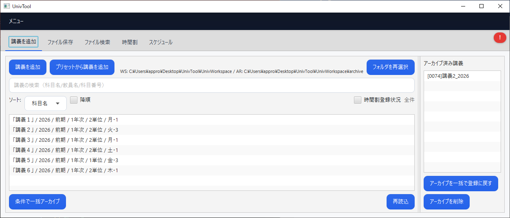
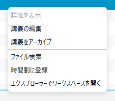
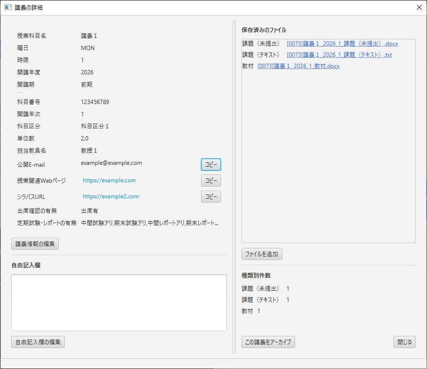
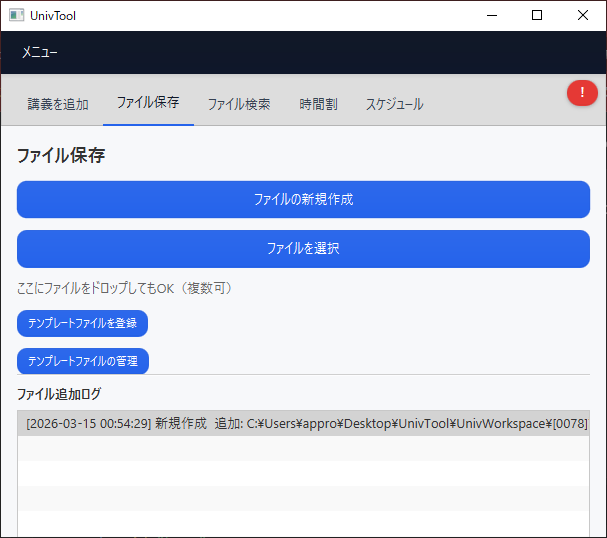
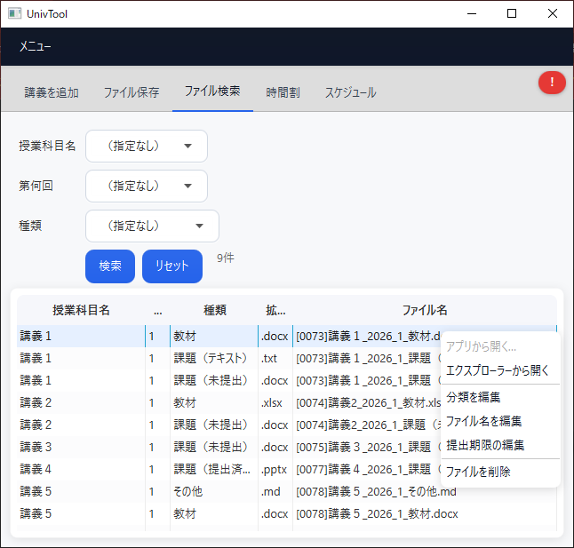
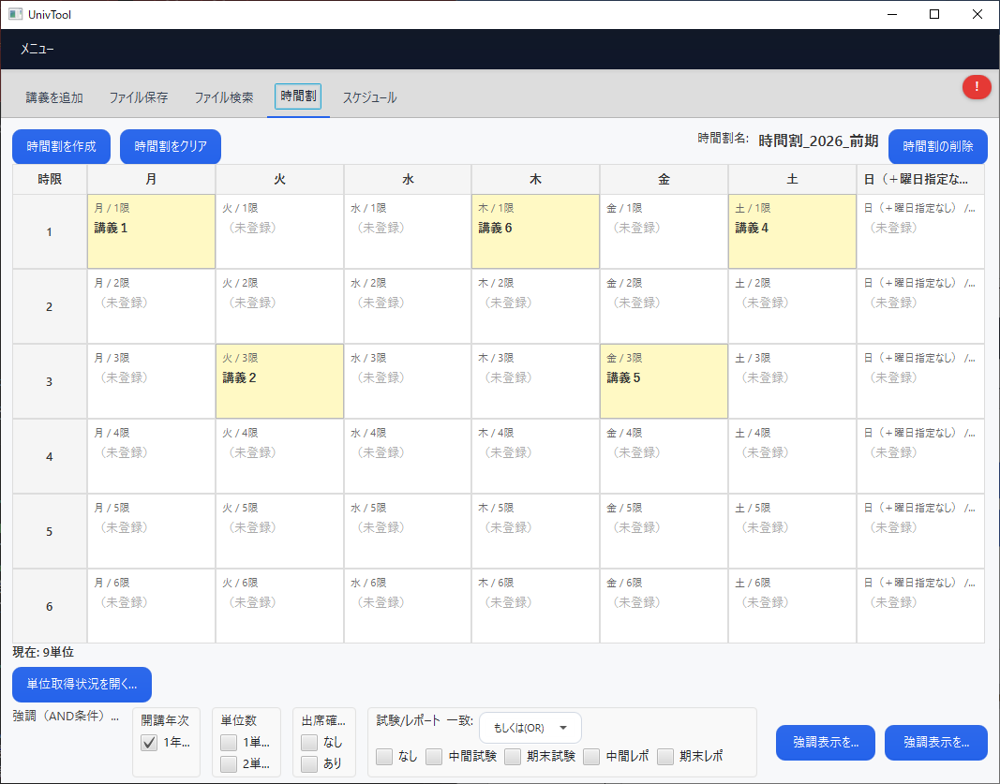
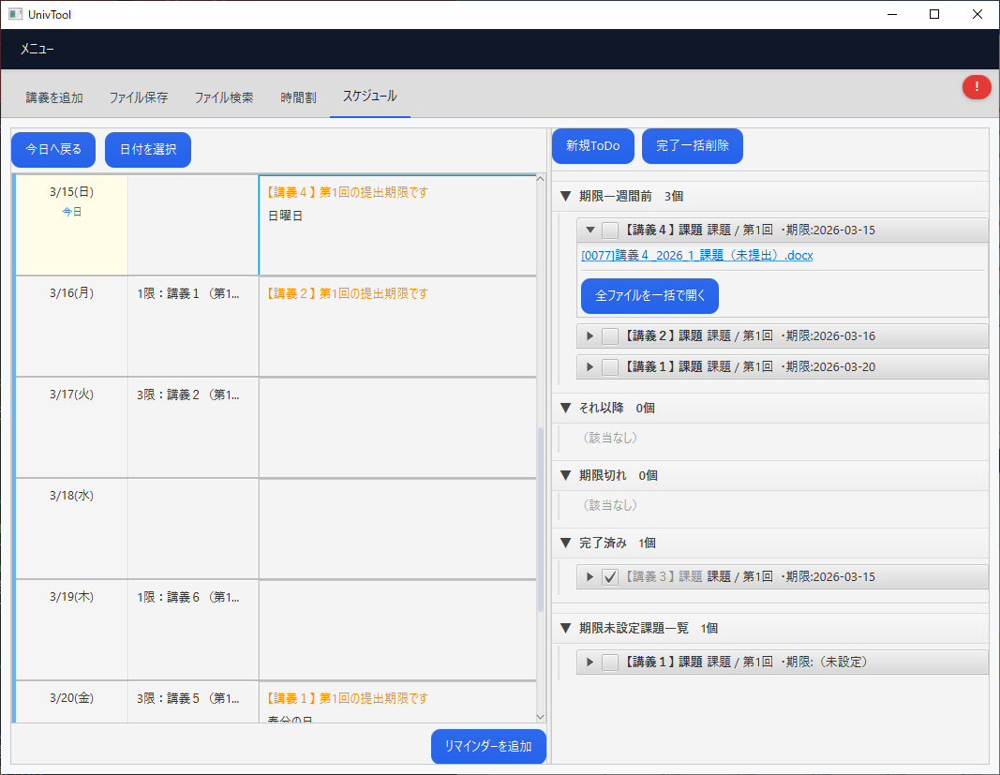
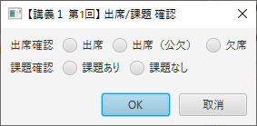
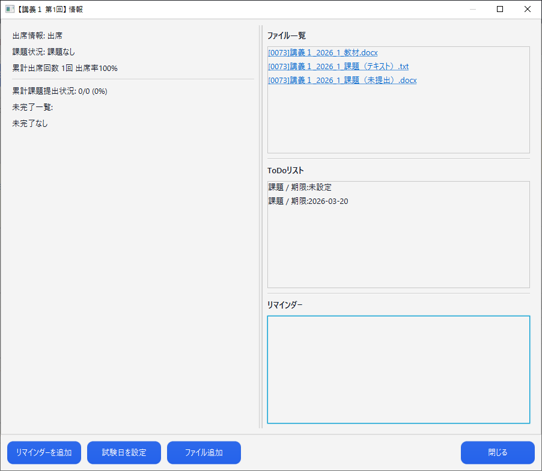
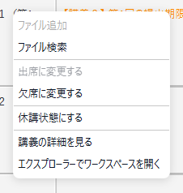

講義管理
講義の一覧表示、検索、ソート、アーカイブ済み講義の確認、再読込などを行うメイン画面。


大学生向けの講義・ファイル・時間割・スケジュール・ToDo 一元管理アプリ。 Java / JavaFX / SQLite ベースで、講義情報の登録から課題ファイルの保存、 期限管理までをローカル環境で完結させている。
UnivTool は、複数の授業情報・配布ファイル・課題・時間割・予定を分散させずに管理するための デスクトップアプリである。 タブ構成で機能を分離しつつ、講義情報・ファイル保存・ToDo/Reminder を相互に連携させ、 「どの講義の、何回目の、どの課題か」後から追いやすい設計を目指している。
年度、学期、曜日・時限、教員、シラバス、科目区分、アーカイブ状態までまとめて管理。
ファイル保存時に分類や回数を付与し、課題系ファイルは ToDo / Reminder と連携。
時間割、講義メモ、カレンダー表示を組み合わせて予定を見やすく整理。
UnivTool の主要画面。講義管理、ファイル保存、検索、時間割、スケジュール管理まで タブごとに分けて掲載。詳細ダイアログや右クリックメニューなどの補助画面もあわせて掲載している。

講義の一覧表示、検索、ソート、アーカイブ済み講義の確認、再読込などを行うメイン画面。



新規ファイル作成、ファイル選択、テンプレート登録・管理、ファイル追加ログの確認を行う画面。

授業科目名・第何回・種類で保存済みファイルを絞り込み、再分類、リネーム、提出期限編集などを行う。

曜日・時限ごとの講義配置、単位数の集計、強調表示条件の指定などを行う。

カレンダー形式で予定や提出期限を確認でき、右側には期限別に整理された ToDo 一覧を表示する。



| 項目 | 内容 |
|---|---|
| アプリ名 | UnivTool |
| 想定用途 | 講義、配布資料、課題、時間割、予定、ToDo の一元管理 |
| 主要技術 | Java 17 / JavaFX / Maven / SQLite / Gson / Apache POI |
| 講義データ | SQLite に保存。講義名、年度、学期、教員、科目区分、フォルダ名などを保持 |
| 設定データ | ~/.univtool 配下の JSON / DB に保存 |
| ワークスペース | 既定候補はユーザホーム直下の UnivWorkspace。講義ごとに保存フォルダが自動で作成される |
| テンプレート | プリセット / テンプレート / ファイル名規則を利用可能 |
| 課題連携 | 課題系ファイルは索引登録後、ToDo / Reminder と同期して期限表示 |
本アプリは開発途中であり、以下の不具合が確認できている。
| ID | 重要度 | 状態 | 概要 | 内容 |
|---|---|---|---|---|
| BUG-001 | 高 | 未修正 | 一部ポップアップがフォーカス喪失で閉じる | 一部のポップアップウィンドウにおいて、フォーカスが外れた際にウィンドウが閉じてしまう。 講義情報やシラバス情報を外部ページからコピー＆ペーストする際に、入力途中でポップアップが消えてしまい、 操作性を大きく損ねている。パネル1~4のそれぞれにおいて、ポップアップウィンドウの仕様が統一されていない ことが原因であると考えられる。 |
| BUG-002 | 中 | 未修正 | 初回起動時の画面遷移が不安定 | 初回起動時にはワークスペース設定画面が表示されるが、フォルダ選択後、 本来は自動的に初期画面へ遷移するはずのところ、正しく遷移しない場合がある。 現状では、一度アプリを終了して再起動することで正しく遷移する。 |
| BUG-003 | 中 | 未修整 | ポータブルモード全般 | ポータブルモードの切替は画面右上の「メニュー」から実行できるが、 現状では不具合が多く、基本的には常にオフで使用することを推奨する。 特に複数デバイス間における時間割などの設定ファイルの引継ぎに問題があり、 これは本アプリにおいて、データの保存場所がとっ散らかっているためであると思われる |
| BUG-004 | 中 | 未修正 | 右クリックのコンテキストメニューが重複表示される | パネル1の講義一覧およびパネル3のファイル一覧において、右クリックで表示されるコンテキストメニューが、 メニュー外をクリックしない限り閉じない場合がある。 そのため、連続して右クリック操作を行うとコンテキストメニューが複数重なって表示され、 画面が見づらくなったり、誤操作の原因になる。 |
| BUG-004 | 低 | 既知 | その他一部挙動の不安定さ | 上記以外にも一部挙動が不安定になる場合がある。 |
不具合を見つけた場合は、 GitHub Issue から報告してくださると助かります。